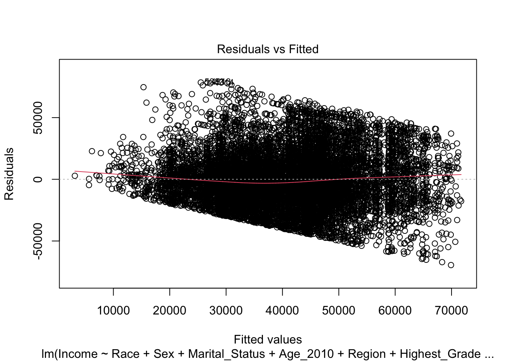
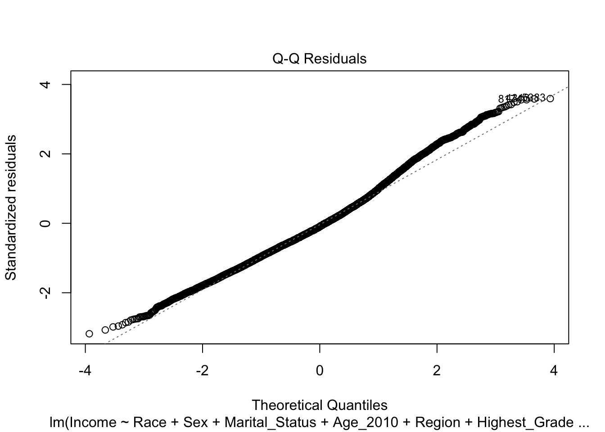
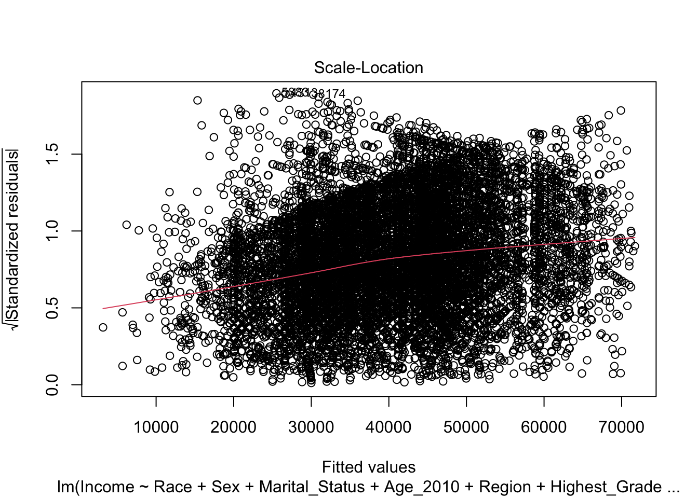
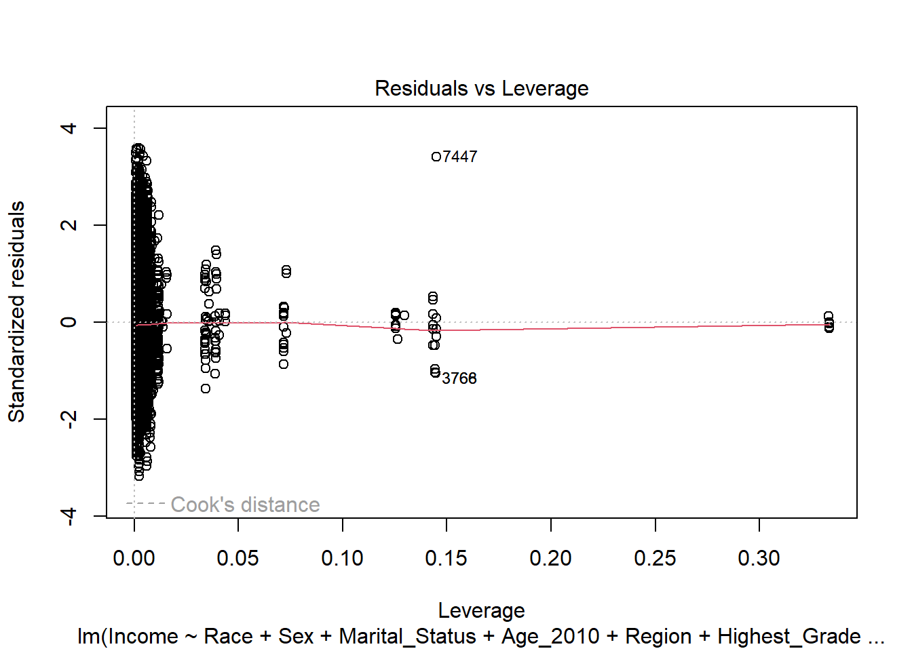

library(tidyverse)
print(getwd())[1] "C:/Users/areth/OneDrive/Documents/MA615/ma4615-sp25-final-project-datadetectives"
This comes from the file analysis.qmd.
We describe here our detailed data analysis. This page will provide an overview of what questions you addressed, illustrations of relevant aspects of the data with tables and figures, and a statistical model that attempts to answer part of the question. You’ll also reflect on next steps and further analysis.
The audience for this page is someone like your class mates, so you can expect that they have some level of statistical and quantitative sophistication and understand ideas like linear and logistic regression, coefficients, confidence intervals, overfitting, etc.
While the exact number of figures and tables will vary and depend on your analysis, you should target around 5 to 6. An overly long analysis could lead to losing points. If you want you can link back to your blog posts or create separate pages with more details.
The style of this paper should aim to be that of an academic paper. I don’t expect this to be of publication quality but you should keep that aim in mind. Avoid using “we” too frequently, for example “We also found that …”. Describe your methodology and your findings but don’t describe your whole process.
The code below shows an example of loading the loan refusal data set (which you should delete at some point).
library(tidyverse)
print(getwd())[1] "C:/Users/areth/OneDrive/Documents/MA615/ma4615-sp25-final-project-datadetectives"In general, you should try to provide links to relevant resources, especially those that helped you. You don’t have to link to every StackOverflow post you used but if there are explainers on aspects of the data or specific models that you found helpful, try to link to those. Also, try to link to other sources that might support (or refute) your analysis. These can just be regular hyperlinks. You don’t need a formal citation.
If you are directly quoting from a source, please make that clear. You can show long quotes using > like this
> To be or not to be.To be or not to be.
You will
lm output and plots are typically not acceptable.The goal of our analysis is to examine how macroeconomic trends in the aftermath of the 2008 recession, such as shifting interest rates, affected different racial and socioeconomic groups in the United States. We aim to answer some of the following research questions:
The following graphs explore some of the relationships between variables in our data to motivate this goal.
Attaching package: 'scales'The following object is masked from 'package:purrr':
discardThe following object is masked from 'package:readr':
col_factor


Rows: 31206 Columns: 11
── Column specification ────────────────────────────────────────────────────────
Delimiter: ","
chr (5): Race, Sex, Highest_Grade_Completed, Marital_Status, Region
dbl (6): Case_ID, Sample_ID, Age_2010, Income_Year, Income, avg_LT_rate
ℹ Use `spec()` to retrieve the full column specification for this data.
ℹ Specify the column types or set `show_col_types = FALSE` to quiet this message.
`summarise()` has grouped output by 'Income_Year'. You can override using the `.groups` argument.Warning: Using `size` aesthetic for lines was deprecated in ggplot2 3.4.0.
ℹ Please use `linewidth` instead.
First tried with outliers and had bad figures, and we determined there were severe outliers impacting our model.
Rows: 31206 Columns: 11
── Column specification ────────────────────────────────────────────────────────
Delimiter: ","
chr (5): Race, Sex, Highest_Grade_Completed, Marital_Status, Region
dbl (6): Case_ID, Sample_ID, Age_2010, Income_Year, Income, avg_LT_rate
ℹ Use `spec()` to retrieve the full column specification for this data.
ℹ Specify the column types or set `show_col_types = FALSE` to quiet this message.
We therefore used R script like below to remove these and create a new dataset specifically for modeling.
library(tidyverse)
# Load merged dataset
nls_with_rates <- read_csv("dataset/nls_with_rates_full.csv")
# Step 1: Calculate IQR boundaries
Q1 <- quantile(nls_with_rates$Income, 0.25, na.rm = TRUE)
Q3 <- quantile(nls_with_rates$Income, 0.75, na.rm = TRUE)
IQR_value <- Q3 - Q1
lower_bound <- Q1 - 0.24 * IQR_value #lots of 0 (n/a) data
upper_bound <- Q3 + 1.5 * IQR_value
# Step 2: Filter out the outliers
nls_no_outliers <- nls_with_rates %>%
filter(Income >= lower_bound & Income <= upper_bound)
# Step 3: Save it
write_csv(nls_no_outliers, "dataset/nls_no_outliers.csv")library(scales)
library(car)Warning: package 'car' was built under R version 4.4.3Loading required package: carDataWarning: package 'carData' was built under R version 4.4.3
Attaching package: 'car'The following object is masked from 'package:dplyr':
recodeThe following object is masked from 'package:purrr':
somelibrary(sandwich)Warning: package 'sandwich' was built under R version 4.4.3nls_data_tbu <- read_csv("dataset/nls_no_outliers.csv")Rows: 24762 Columns: 12── Column specification ────────────────────────────────────────────────────────
Delimiter: ","
chr (6): Race, Sex, Highest_Grade_Completed, Marital_Status, Region, income_...
dbl (6): Case_ID, Sample_ID, Age_2010, Income_Year, Income, avg_LT_rate
ℹ Use `spec()` to retrieve the full column specification for this data.
ℹ Specify the column types or set `show_col_types = FALSE` to quiet this message.nls_data_modeling <- nls_data_tbu %>%
filter(Income_Year %in% c(2006, 2008, 2010))
model = lm(Income ~ Race + Sex + Marital_Status + Age_2010 + Region + Highest_Grade_Completed + avg_LT_rate, data = filter(nls_data_modeling, Income > 0))
# coeftest(model, vcov = vcovHC(model, type = "HC1"))
model_data = model.frame(model)
model_data$Predicted = predict(model)
summary(model)
Call:
lm(formula = Income ~ Race + Sex + Marital_Status + Age_2010 +
Region + Highest_Grade_Completed + avg_LT_rate, data = filter(nls_data_modeling,
Income > 0))
Residuals:
Min 1Q Median 3Q Max
-69506 -14653 -2070 12953 78491
Coefficients:
Estimate Std. Error t value
(Intercept) 26165.42 5240.98 4.992
RaceHispanic 3275.46 670.10 4.888
RaceNon-Black/Non-Hispanic 2820.26 506.16 5.572
SexMale 14598.40 409.11 35.684
Marital_StatusMarried 2173.43 522.38 4.161
Marital_StatusNever Married -4350.62 718.71 -6.053
Marital_StatusSeparated -5725.37 1099.70 -5.206
Marital_StatusWidowed -4564.88 1598.06 -2.857
Age_2010 14.93 91.02 0.164
RegionNortheast 3910.85 675.84 5.787
RegionSouth 571.03 526.53 1.085
RegionWest 2791.81 645.68 4.324
Highest_Grade_Completed11TH GRADE 2666.74 1534.04 1.738
Highest_Grade_Completed12TH GRADE 8853.67 1248.16 7.093
Highest_Grade_Completed1ST GRADE -7792.04 12711.36 -0.613
Highest_Grade_Completed1ST YEAR COLLEGE 11943.28 1412.01 8.458
Highest_Grade_Completed2ND GRADE 382.93 12724.00 0.030
Highest_Grade_Completed2ND YEAR COLLEGE 16549.15 1314.50 12.590
Highest_Grade_Completed3RD GRADE -9699.49 6001.61 -1.616
Highest_Grade_Completed3RD YEAR COLLEGE 15008.54 1708.21 8.786
Highest_Grade_Completed4TH GRADE -3026.79 8387.43 -0.361
Highest_Grade_Completed4TH YEAR COLLEGE 24295.49 1315.56 18.468
Highest_Grade_Completed5TH GRADE -7841.64 7846.02 -0.999
Highest_Grade_Completed5TH YEAR COLLEGE 22417.36 2008.54 11.161
Highest_Grade_Completed6TH GRADE 87.04 4475.35 0.019
Highest_Grade_Completed6TH YEAR COLLEGE 30377.44 1496.30 20.302
Highest_Grade_Completed7TH GRADE -3504.77 4175.86 -0.839
Highest_Grade_Completed7TH YEAR COLLEGE 30600.11 2177.95 14.050
Highest_Grade_Completed8TH GRADE -4225.57 2538.12 -1.665
Highest_Grade_Completed8TH YEAR COLLEGE OR MORE 30094.24 1964.78 15.317
Highest_Grade_Completed9TH GRADE -554.84 1969.97 -0.282
Highest_Grade_CompletedUNGRADED 6296.43 8361.79 0.753
avg_LT_rate -2492.56 563.71 -4.422
Pr(>|t|)
(Intercept) 6.05e-07 ***
RaceHispanic 1.03e-06 ***
RaceNon-Black/Non-Hispanic 2.57e-08 ***
SexMale < 2e-16 ***
Marital_StatusMarried 3.20e-05 ***
Marital_StatusNever Married 1.46e-09 ***
Marital_StatusSeparated 1.96e-07 ***
Marital_StatusWidowed 0.00429 **
Age_2010 0.86968
RegionNortheast 7.36e-09 ***
RegionSouth 0.27816
RegionWest 1.55e-05 ***
Highest_Grade_Completed11TH GRADE 0.08217 .
Highest_Grade_Completed12TH GRADE 1.38e-12 ***
Highest_Grade_Completed1ST GRADE 0.53989
Highest_Grade_Completed1ST YEAR COLLEGE < 2e-16 ***
Highest_Grade_Completed2ND GRADE 0.97599
Highest_Grade_Completed2ND YEAR COLLEGE < 2e-16 ***
Highest_Grade_Completed3RD GRADE 0.10609
Highest_Grade_Completed3RD YEAR COLLEGE < 2e-16 ***
Highest_Grade_Completed4TH GRADE 0.71820
Highest_Grade_Completed4TH YEAR COLLEGE < 2e-16 ***
Highest_Grade_Completed5TH GRADE 0.31760
Highest_Grade_Completed5TH YEAR COLLEGE < 2e-16 ***
Highest_Grade_Completed6TH GRADE 0.98448
Highest_Grade_Completed6TH YEAR COLLEGE < 2e-16 ***
Highest_Grade_Completed7TH GRADE 0.40132
Highest_Grade_Completed7TH YEAR COLLEGE < 2e-16 ***
Highest_Grade_Completed8TH GRADE 0.09597 .
Highest_Grade_Completed8TH YEAR COLLEGE OR MORE < 2e-16 ***
Highest_Grade_Completed9TH GRADE 0.77822
Highest_Grade_CompletedUNGRADED 0.45146
avg_LT_rate 9.88e-06 ***
---
Signif. codes: 0 '***' 0.001 '**' 0.01 '*' 0.05 '.' 0.1 ' ' 1
Residual standard error: 21870 on 11854 degrees of freedom
(72 observations deleted due to missingness)
Multiple R-squared: 0.2137, Adjusted R-squared: 0.2116
F-statistic: 100.7 on 32 and 11854 DF, p-value: < 2.2e-16vif(model, type = "predictor")GVIFs computed for predictors GVIF Df GVIF^(1/(2*Df)) Interacts With
Race 1.374493 2 1.082768 --
Sex 1.038698 1 1.019165 --
Marital_Status 1.134508 4 1.015900 --
Age_2010 1.008508 1 1.004245 --
Region 1.258937 3 1.039124 --
Highest_Grade_Completed 1.166015 20 1.003847 --
avg_LT_rate 1.000403 1 1.000201 --
Other Predictors
Race Sex, Marital_Status, Age_2010, Region, Highest_Grade_Completed, avg_LT_rate
Sex Race, Marital_Status, Age_2010, Region, Highest_Grade_Completed, avg_LT_rate
Marital_Status Race, Sex, Age_2010, Region, Highest_Grade_Completed, avg_LT_rate
Age_2010 Race, Sex, Marital_Status, Region, Highest_Grade_Completed, avg_LT_rate
Region Race, Sex, Marital_Status, Age_2010, Highest_Grade_Completed, avg_LT_rate
Highest_Grade_Completed Race, Sex, Marital_Status, Age_2010, Region, avg_LT_rate
avg_LT_rate Race, Sex, Marital_Status, Age_2010, Region, Highest_Grade_Completedplot(model)


